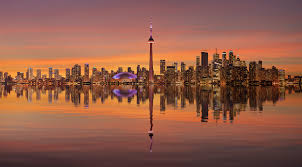
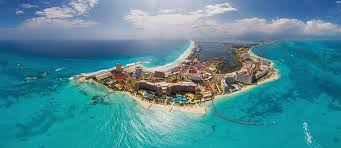
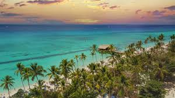
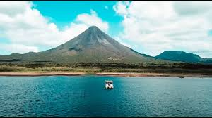
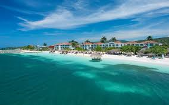

Places I've Been
-
Canada
I have visited Canada twice, and have stayed in multiple cities including Toronto, Niagara, and Montreal. All three cities where beautiful, but I did not experience the true Canadien weather, as both times I went it was during the summer. I went their to play hockey and it was an unforgettable experience. Overall I would give it a 7.2/10
-
Mexico
I went to Mexico last year, visiting both Cancun and Mexico City. Two very different places, but I enjoyed both very much. Cancun was pretty and relaxing, while Meixco City gave me the chance to experience true Mexican Cultire. 6.8/10
-
Dominican Republic
I went to Punta Cana when I was younger, and did not love it. It is a very nice island, but I found there was not a lot to do. The food however, was very good. It was a good trip, but not great. 6/10.
-
Costa Rica
Costa Rica was one of the nicest islands I have been to. The mix of beaches and rain forests was unlike anywhere else I have been. The wildlife was also amazing as there where monkeys everywhere I looked. 8.8/10
-
Jamaica
Jamaica is my favortie country. I have been there 13 times, and would go back again anytime. I always stay in Montego Bay, but have also been to other cities such as Nigril. The weather is perfect, and they have the most beautiful beaches I have ever seen. The people are also amazing. 9.5/10
-
Italy
I think I was too young to really appreciate Italy. Looking back I wish I was older so I could better understand the history and beuty of the country. I stayed in both Rome and Florence and ate some of the best food I ever have had. 9.5/10
-
France

Similar to Italy, I was not older enough to truly enjoy France. Paris was very nice, and I think I would enjoy it a lot more if I went again today. Once again the food was very good. 7.8/10